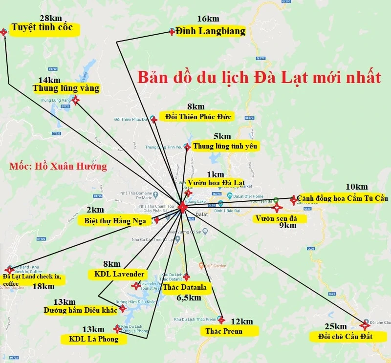

Đà Lạt
Tự hào được làm con vùng đất này !
Tự hào được làm con vùng đất này !
Đà Lạt được mệnh danh là thiên đường du lịch. - Một xứ sở của các loài hoa thi nhau đua sắc thắm. Ở Đà Lạt tập trung rất nhiều các loài hoa quý từ các nước khác nhập về. Tạo thêm cho Đà Lạt một vẽ đẹp huyền bí và mơ mộng tới tột cùng. Màng không có một thành phố nào tại nước Việt Nam ta sánh kịp với Đà Lạt.
Ý nghĩa cái tên Thành Phố Đà Lạt - Lúc xưa khi tìm ra được thành phố thơ mộng hảo huyền này thì. Cái tên gọi Đà Lạt thân thương ấy bắt nguồn từ. Một câu châm ngôn nổi tiếng và đầy hàm ý. Câu châm ngôn đó mang tiếng la tinh ”DAT ALLIIS LAETITIUM ALLIIS TEMPERRIEM”. Nếu ai tinh ý sẽ nhận ra được câu tỉnh ngôn này. Nếu bạn ghép 5 chữ cái đầu của câu nói này. Bạn sẽ viết ra được chữ DALAT mà ta thường gọi.
Câu nói này được phổ dịch ra có ý nghĩa. Là ” Cho người này niềm vui cho người kia sự mát lành”. Câu nói này là một giả thiết của người pháp. Bởi những người pháp khi họ tìm ra được một vùng đất mới. Cùng với đó họ sẽ đặt cho vùng đất này một câu châm ngôn. Lý giải này cũng rất hợp lý, bởi những mảnh đất của châu âu khi được tìm ra. Nó cũng đều được gắn liền với một câu châm ngôn.
Đà Lạt - là điểm đến nổi tiếng bởi sự lãng mạn thường được gọi với những cái tên hoa mỹ như Thành phố Ngàn hoa, Xứ sở tình yêu, Thành phố mộng mơ, Xứ sơ hoa đào… du khách yêu thích Đà Lạt bởi sự thơ mộng của những đồi thông cao ngút ngàn, hay vẻ đẹp muôn loài hoa kết hợp với nền khí hậu ôn hòa độc đáo.
Được người mẹ thiên nhiên ưu đãi về khí hậu cũng như cảnh quan tuyệt vời tại nơi đây nên Đà Lạt có Các địa điểm du lịch nổi tiếng mà không một nơi nào tại Việt Nam có thể sánh bằng, đến Đà Lạt bạn có thể dành cả ngày dong duổi khắp các ngóc ngách, đi đến đâu bạn cũng bắt gặp những điểm du lịch tuyệt đẹp, dưới đây là những điểm du lịch nổi tiếng nhất bạn không nên bỏ lỡ.